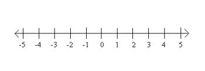

Números enteros
Los números naturales son los que usamos para contar: 1, 2, 3, 4, 5, 6, 7, …
Los representamos por:
N = {1, 2, 3, 4, 5, 6, 7, 8, 9, 10, …}
Cuando les añadimos el 0 y los enteros negativos, obtenemos los números enteros y los representamos por:
Z = {…, -4, -3, -2, -1, 0, 1, 2, 3, …}

El valor absoluto de un número entero es el número natural que resulta al quitarle el signo:
|-5| = 5 |11| = 11 |0| = 0
El opuesto de un número entero es otro número entero con el mismo valor absoluto y signo opuesto:
Op(-3) = 3 Op(0) = 0 Op(7) = -7
Ejercicio: calcula:
a) |-21| =
b) |16| =
c) |15-18|=
d) Op(-13) =
e) Op(179) =
f) Op(12-17) =
Soluciones: a) 21; b) 16; c) 3; d) 13; e) -179; f) 5
Obra publicada con Licencia Creative Commons Reconocimiento No comercial Compartir igual 3.0